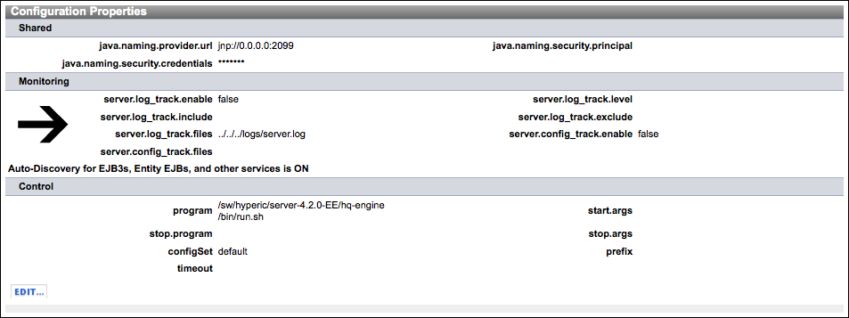

Topics marked with * relate to features available only in vFabric Hyperic.
- Navigate to Configuration Properties page.
- Configure Shared Properties
- Configure Monitoring Properties - Log Tracking
- HQ Resource Types that Support Log Tracking
- Supported Log Message Types
- Log Tracking Configuration Options
- Configure Monitoring Properties - Configuration Tracking
- HQ Configuration Tracking Functionality
- Set Up Configuration Tracking for a Resource
- View Configuration Events for a Resource
- Configure Alerts Based on Configuration Events
- Configure Control Properties
Feedback is welcome. Click Add Comment at the bottom of the page.
Navigate to Configuration Properties page.
The Configuration Properties section of the Inventory page for a resource contains the configuration options and currently selected values for the resource. Configuration properties for the resource are presented in three sections:
- Shared — The properties in this section relate to more than one management function, for instance both monitoring and control actions.
- Monitoring — These properties set options related to log tracking, configuration tracking, and, for servers, here is where you can disable auto-discovery of child services.
- Control — If Hyperic supports control actions for the currently selected resource type, this section includes any configuration properties required to enable resource control, for example, the path of the start script to use to start aserver.
Click Edit to open the Edit Configuration Properties page for the currently selected resource.
Configure Shared Properties
Configure Monitoring Properties - Log Tracking
HQ Resource Types that Support Log Tracking
HQ supports log tracking for operating system platforms, network services, and most server types. If a resource supports log tracking, its Configuration Properties page contains log tracking configuration options.
Supported Log Message Types
HQ can monitor and record events for:
- Log file messages that specify log levels using log4j log levels.
- Events written to Windows Event Logs.
- Network request results for a variety of network services.
Log Tracking Configuration Options
You enable and configure log tracking for a resource on its Configuration Properties page. Navigate to the resource's Inventory page, and click Edit in the Configuration Properties section to display the Configuration Properties page.
Note: Log and configuration tracking must be enabled for a resource if you wish to log events for log messages or configuration changes. Event logging is automatic for alerts and control actions. Log tracking configuration options vary somewhat by resource type.
Log tracking options vary by resource type. See the following sections for more detail:
- Log Tracking for Resources with Log4j Logs
- Log Tracking for Network Services
- Log Tracking for Windows Platforms
Log Tracking for Resources with Log4j Logs
This section describes the log tracking configuration options for resources that whose log files use logj4 levels.

An authorized user can set the values of these configuration options:
- Enable/disable log tracking.
- Specify one or more files to track, as a comma-separated list. The HQ Agent must be able to read these files, so make sure permissions are set appropriately.
- Specify the highest log level to track:
- Error - Messages with log level "FATAL" or "ERROR"
- Warn
- Info
- Debug
- Specify substrings or expressions to use as include/exclude filter criteria. Enter a substring or a regular expression that a log message must contain or match in Log Pattern Match. For more information, see java.util.regex.Pattern.
Log Tracking for Network Services
This section describes the log tracking configuration options for network services.

An authorized user can set the values of these configuration options:
- Enable/disable log tracking.
- Specify the highest log level to track:
- Error
- Warn
- Info
- Debug
- Specify substrings or expressions to use as include/exclude filter criteria. Enter a substring or a regular expression that a log message must contain or match in Log Pattern Match. For more information, see java.util.regex.Pattern.h3. Log Tracking for Windows Events
Log Tracking for Windows Platforms
This section describes the log tracking configuration options for platforms of type "win32".

An authorized user can set the values of these configuration options:
- Enable/disable log tracking.
- Specify one or more Event Log to track:
- System - contains events logged by Windows system components. For example, if a driver fails to load during startup, an event is recorded in the system log. Windows predetermines the events that are logged by system components.
- Application - contains events logged by programs. For example, a database program may record a file error in the application log. Events that are written to the application log are determined by the developers of the software program.
- Security - contains events such as valid and invalid logon attempts, as well as events related to resource use, such as the creating, opening, or deleting of files. For example, when logon auditing is enabled, an event is recorded in the security log each time a user attempts to log on to the computer. A Windows administrator or member of the Windows Administrators group specify which events are recorded in the security log.
- "*" causes all event logs to be tracked
- Specify the highest log level to track:
- Error - Windows Events with level "ERROR"
- Warn - Windows Events with level "WARNING"
- Info - Windows Events with level "INFORMATION" or "SUCCESS"
- Debug - No Windows Event types map to this level
Content of Logged Windows Events
When Windows log tracking is enabled, an entry of this form is logged for events that match the criteria you specified on the resource's Configuration Properties page:
[Timestamp] Log Message (EventLogName):EventLogName:EventAttributes
where:
- Timestamp - is when the event occurred
- Log Message - is an text string
- EventLogName - is the Windows event log type, "System", "Security", or "Application".
- EventAttributes - a colon delimited string made of the Windows event Source and Message attributes.
For example, this log entry:
04/19/2010 06:06 AM Log Message (SYSTEM): SYSTEM: Print: Printer HP LaserJet 6P was paused.
is for an Windows event written to the Windows System event log at 6:06 AM on 04/19/2010. The Windows event Source and Message attributes, are "Print" and "Printer HP LaserJet 6P was paused.", respectively.
Tailoring the Content and Format of Logged Windows Events
Tou can configure the last portion of the log data that the agent writes for a Windows event - referred to above as EventAttributes. You can include additional event attributes, for example User and Computer. To do so, you add the platform.log_track.eventfmt property to the agent.properties file for the Hyperic Agent monitoring the Windows platform.
Usage of platform.log_track.eventfmt property is described below.
platform.log_track.eventfmt Property
| Description
Specifies the content and format of the Windows event attributes that an HQ Agent includes when logging a Windows event as an event in HQ. agent.properties does not contain the platform.log_track.eventfmt property, you must explicitly add it if you want to tailor the data logged for Windows events. Default Behavior When Windows log tracking is enabled, an entry of this form is logged for events that match the criteria you specified on the resource's Configuration Properties page:[Timestamp] Log Message (EventLogName):EventLogName:EventAttributes where:
For example, this log entry: 04/19/2010 06:06 AM Log Message (SYSTEM): SYSTEM: Print: Printer HP LaserJet 6P was paused. is for an Windows event written to the Windows System event log at 6:06 AM on 04/19/2010. The Windows event Source and Message attributes, are "Print" and "Printer HP LaserJet 6P was paused.", respectively. Configuration You can use the parameters below to configure the Windows event attributes that the agent writes for a Windows event. Each parameter maps to Windows event attribute of the same name.
For example, with this property setting: platform.log_track.eventfmt=%user%@%computer% %source%:%event%:%message% the HQ Agent will write the following data when logging Windows event: 04/19/2010 06:06 AM Log Message (SYSTEM): SYSTEM: HP_Admistrator@Office Print:7:Printer HP LaserJet 6P was paused. This entry is for as for an Windows event written to the Windows System event log at 6:06 AM on 04/19/2010. The software associated with the event was running as "HP_Administrator" on the host "Office". The Windows event's Source, Event, and Message attributes, are "Print", "7", and "Printer HP LaserJet 6P was paused.", respectively. After you configure the content of the log entry written for a Windows event, when you configure an alert definition for a Windows resource, you can create an alert condition based on the message content, including the custom fields you have configured. For more information, see the "Define Alert Condition Set" section in Configure Monitoring Options. |
Configure Monitoring Properties - Configuration Tracking
Topics marked with * relate to features available only in vFabric Hyperic.
Feedback is welcome. Click Add Comment at the bottom of the page.
HQ Configuration Tracking Functionality
You can configure HQ to log an event when a specified file - usually a configuration artifact - associated with a managed resource is modified. The agent use a cryptographic hash function to continuously compare a original version of the file with the current version to see if it has changed. You can view configuration event data on the Monitor page for a resource or the Event Center. You can base alert conditions on configuration events.
- HQ can track multiple files per resource.
- The HQ Agent must be able to read a file to track it - ensure that file permissions are such that the HQ Agent can read files you wish to track.
- HQ is supported for most platform and server types; typically not for services.
Set Up Configuration Tracking for a Resource
To enable and configure configuration tracking for a single resource:
- Navigate to the resource's Inventory page
- In the "Configuration Properties" section, click Edit.
- On the Edit Configuration Properties page:
- Click the Enable Config Tracking box to turn configuration tracking on and off for the resource.
- Enter the path, relative to the resource's installation directory, to each file you wish to track. Separate files with a comma.
- Click OK.
View Configuration Events for a Resource
You enable and configure log tracking for a resource on its Configuration Properties page. Navigate to the resource's Inventory page, and click Edit in the Configuration Properties section to display the Configuration Properties page.
Configure Alerts Based on Configuration Events
- Enable and configure configuration tracking as described above.
- Navigate to that resource's "Alert" screen ( ).
One way to get there is from the "Browse Resources" screen: click next to the resource.
next to the resource. - Click
 to define a new alert or click the alert name to edit an existing definition.
to define a new alert or click the alert name to edit an existing definition. - If defining a new alert, follow the instructions on the "New Alert" screen for defining an alert.
Be sure to select Config change and match file name as a triggering condition. - If editing an alert definition:
- On the "Edit Alert" screen, click
 in the "Condition Set" section.
in the "Condition Set" section. - On the "Edit Alert Condition" screen, follow the instructions for editing the alert's condition.
Be sure to select Config change and match file name as a triggering condition.
- On the "Edit Alert" screen, click
Configure Control Properties
This section lists the information necessary for HQ to perform control actions on this resource. Not all resource types have associated control actions: Platforms, applications, and mixed groups do not have control actions.
Example
For an Apache server, HQ can perform these control actions: start, stop, restart, graceful, startssl, and configtest. In order for HQ to do that, the user must provide the following information about the Apache installation:
- pidfile: The Apache httpd pid file
- program: The apache httpd control program
- prefix: Prefix arguments to the control program
- timeout: Timeout of control operations (measured in seconds)
{kind=link}